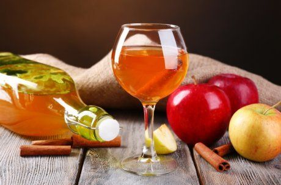

shutterstock.com
В последнее время все большую популярность набирает такой напиток, как настойка на спирту в домашних условиях. Рецепт ее, передаваемый из поколения в поколение, пожалуй, есть не в каждой семье, и поэтому ниже делимся проверенными советами.
Любой рецепт приготовления настойки на спирту основан на двух ключевых ингредиентах: крепком алкоголе и растительном сырье: ягодах, травах, фруктах, семенах. Использовать можно не только спирт, но и водку. Некоторые берут джин и коньяк, но нужно учесть, что такая настойка получит дополнительный вкусовой оттенок.
Кедровая настойка на спирту
Эту богатую витаминами и множеством полезных элементов настойку также называют кедровка
Вам понадобятся: 4 ст.л. кедровых орехов в скорлупе, 500 мл спирта 40-45%, 1 ст.л. сахара, ванилин (на кончике ножа), лист черной смородины, 3 г апельсиновой цедры.
Приготовление. Орехи насыпьте в металлическую миску и залейте кипятком, перемешайте, слейте воду. Сделайте так 3 раза – это уберет горький привкус смол. Переложите орехи в бутылку, добавьте сахар, ванилин, смородиновый лист и цедру. Залейте спиртом, перемешайте и плотно накройте крышкой. Бутылку уберите в темное теплое место на 10 дней и раз в 3 дня аккуратно встряхивайте. Процедите настойку через марлю и поставьте в темное прохладное место на 4 дня.
Настойка клюквы на спирту
Клюква хорошо сочетается с калганом, который к тому же сделает настойку еще более полезной
Вам понадобятся: 400 г клюквы, 2 л спирта 40-45%, 3 ст.л. сахара, 2 ст.л. меда, цедра 1 лимона, 1 ч.л. молотого корня калгана.
Приготовление. Ягоды помойте и переберите, положите в кастрюлю и разомните толкушкой. Всыпьте сахар, накройте крышкой и поставьте в теплое место на 2 дня. Затем влейте в эту массу 1 л спирта, снова накройте и оставьте на 2 недели. Полученный настой слейте в отдельную бутыль, а клюкву залейте оставшимся спиртом и дайте постоять еще неделю, после чего снова слейте настой и смешайте его с предыдущим. Процедите через несколько слоев марли и добавьте мед, цедру лимона, калган. Настаивайте еще неделю, затем опять профильтруйте.
Настойка из черноплодной рябины на спирту
Попробуйте пряную настойку из аронии, в народе более известной как черноплодная рябина
Вам понадобятся: 1,5 кг ягод, 1 л спирта, 0,5 кг сахара, 3 бутона гвоздики.
Приготовление. Рябину переберите и вымойте, поместите в кастрюлю и тщательно растолките. Добавьте гвоздику и сахар, перемешайте, накройте крышкой и оставьте в теплом месте на несколько дней. Вылейте в рябиновую массу спирт, закройте и снова отправьте в темное место на 55-65 дней, после чего процедите.
Настойка из калины на спирту
Калиновая настойка помогает справиться с простудой, а готовится очень просто
Вам понадобятся: 0,5 кг калины, 200 мл спирта, 300 мл воды и 1 ст.л. меда.
Приготовление. Помытые и перебранные ягоды положите в кастрюлю и разомните толкушкой либо перетрите через сито, добавьте мед и залейте все спиртом. Перемешайте, накройте крышкой и настаивайте 3 недели в темном месте при комнатной температуре. Полученный напиток процедите через марлю.
Настойка из брусники на спирту
У брусничной настойки будет интересный вкус, если добавить шиповник и малину
Вам понадобятся: 2 ст.л. брусники, 2 ст.л. малины, 2 ст.л. шиповника, 500 мл спирта.
Приготовление. Переберите и помойте ягоды, сложите бруснику в пакет и немного помните скалкой. Затем переложите все ингредиенты в банку, залейте спиртом, плотно накройте крышкой и настаивайте в темном месте на протяжении 1 месяца, после чего напиток процедите.
Настойка из яблок на спирту
Вашему вниманию – рецепт быстрой настойки на спирту, которая настаивается всего 10 дней.

У яблочной настойки красивый янтарный цвет и яркий аромат
Вам понадобятся: 1 кг яблок, 1 л спирта, 0,5 ч.л. молотой корицы (или 1/2 коричной палочки), 2 г ванилина.
Приготовление. Вымытые яблоки очистите от сердцевины, нарежьте небольшими дольками и сложите в 2-3-литровую банку. Добавьте специи и спирт, накройте крышкой и поставьте на 10 дней в темное место. Затем процедите настойку через марлю, разлейте по бутылкам и приступайте к дегустации.
Настойка из красной смородины на спирту
Готовить настойку можно из смородины любого сорта, а изюминку добавят смородиновые листья
Вам понадобятся: 1 л красной смородины, 500 мл спирта, 5 смородиновых листьев, 0,75 л воды, 3 стакана сахара.
Приготовление. Чистые ягоды и листья сложите в банку так, чтобы заполнить ее наполовину. Влейте спирт, перемешайте, плотно закройте банку и настаивайте 2 месяца в темном месте. Затем процедите настой, ягоды отожмите в емкость и смешайте полученный сок и настойку с предварительно сваренным из воды и сахара сиропом. Разлейте все по бутылкам.
Настойка из вишни на спирту
Попробуйте очень вкусную пряную вишневую настойку
Вам понадобятся: 2 кг вишни, 1 л спирта, 10 ст.л. сахара, 8 бутонов гвоздики, 0,5 ч.л. корицы молотой, 0,5 ч.л. мускатного ореха.
Приготовление. Вымойте вишню и проколите каждую ягоду зубочисткой. В отдельной миске смешайте сахар, корицу, мускатный орех и гвоздику. Выложите вишни в банку слоями, пересыпая каждый слой смесью сахара и специй. Затем залейте все спиртом и накройте банку крышкой или тканью (в этом случае вкус настойки будет более мягким).
Обратите внимание: настаивать вишневую настойку нужно в хорошо освещенном месте, например, на подоконнике.
На протяжении 2 месяцев не забывайте перемешивать ее каждые 3 дня, а после – процедите через сито.
Лимонная настойка на спирту

Мята и лимон отлично сочетаются, придавая напитку свежий аромат
Вам понадобятся: цедра 5 лимонов, 150 г листьев свежей мяты (или 50 г сушеной), 1 л спирта.
Приготовление. Вымойте лимоны в горячей воде и снимите с них цедру (без белой мякоти). В банку положите чистые листья мяты, цедру и залейте спиртом. Закройте банку и оставьте на 10 дней в темном месте при комнатной температуре, ежедневно аккуратно встряхивая. Затем процедите настойку через марлю и разлейте по бутылкам.
Сливовая настойка на спирту
Для приготовления настойки по этому рецепту удалять косточки из слив не нужно – они добавят интересные ноты к вкусу и аромату напитка
Вам понадобятся: 1 кг слив, 1 л спирта, 150 мл воды, 200 г сахара, 4 веточки мяты.
Приготовление. Вымытые сливы сложите в кастрюлю, залейте спиртом и оставьте на 2 недели при комнатной температуре в темном месте. Затем слейте полученную жидкость в банку и аккуратно влейте ее в емкость с заранее приготовленным сиропом, не переставая помешивать. В бутылку положите мяту и процедите туда же настойку. Закройте крышкой и уже через сутки можете наслаждаться ароматным напитком.
Как видите, для того, чтобы приготовить домашнюю настойку на спирту, самое главное – запастись терпением, ведь чем дольше будет настаиваться напиток, тем насыщеннее будет его вкус.